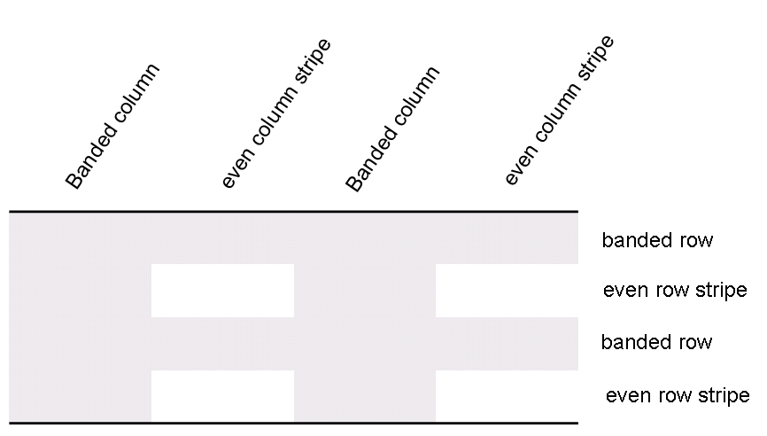

tblStylePr (Style Conditional Table Formatting Properties)
This element specifies a set of formatting properties which shall be conditionally applied to the parts of a table which match the requirement specified on the type attribute. These table conditional formats are applied to different regions of the table as follows:

All rows in the table can also have conditional formatting on an alternating row/column basis as well as follows:

When specified, these conditional formats shall be applied in the following order (therefore subsequent formats override properties on previous formats):
• Whole table
• Banded columns, even column banding
• Banded rows, even row banding
• First row, last row
• Top left, top right, bottom left, bottom right
[Example: Consider a table style which contains conditional formatting, defined as follows:
<w:style w:type="table" w:styleId="exampleTableStyle">
…
<w:tblStylePr w:type="firstRow">
<w:tblPr>
<w:tblCellSpacing w:w="29" w:type="dxa"/>
</w:tblPr>
…
</w:tblStylePr>
</w:style>
The tblStylePr element specifies a set of table properties which shall be conditionally applied to all parts of the table which meet the criteria specified by the type attribute (in this case, all heading rows for the current table). end example]
|
Parent Elements |
|
style (§2.7.3.17) |
|
Child Elements |
Subclause |
|
pPr (Table Style Conditional Formatting Paragraph Properties) |
§2.7.5.1 |
|
§2.7.5.2 | |
|
tblPr (Table Style Conditional Formatting Table Properties) |
§2.7.5.3 |
|
tcPr (Table Style Conditional Formatting Table Cell Properties) |
§2.7.5.9 |
|
trPr (Table Style Conditional Formatting Table Row Properties) |
§2.7.5.10 |
|
Attributes |
Description |
|
type (Table Style Conditional Formatting Type) |
Specifies the section of the table to which the current conditional formatting properties shall be applied.
[Example: Consider a table style which contains conditional formatting, defined as follows:
<w:style w:type="table" …>
The type attribute value of lastRow specifies that this set of conditional formatting properties shall be applied to the last row of the table only. end example]
The possible values for this attribute are defined by the ST_TblStyleOverrideType simple type (§2.18.96). |
The following XML Schema fragment defines the contents of this element:
<complexType name="CT_TblStylePr">
<sequence>
<element name="pPr" type="CT_PPr" minOccurs="0"/>
<element name="rPr" type="CT_RPr" minOccurs="0"/>
<element name="tblPr" type="CT_TblPrBase" minOccurs="0"/>
<element name="trPr" type="CT_TrPr" minOccurs="0" maxOccurs="1"/>
<element name="tcPr" type="CT_TcPr" minOccurs="0" maxOccurs="1"/>
</sequence>
<attribute name="type" type="ST_TblStyleOverrideType" use="required"/>
</complexType>